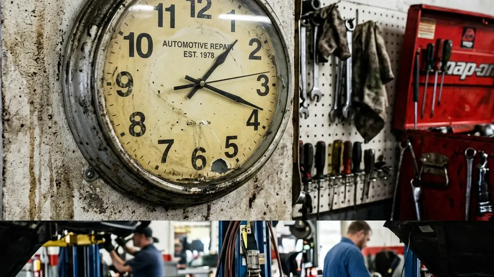

When you finally decide to upgrade your vehicle, logistics become the immediate concern. "Can I wait in the lobby, or do I need to drop it off? Do I need to take a day off work?" Knowing exactly how long a professional window tinting job takes helps you plan your day and sets the right expectations.
While a cheap shop might promise to have you out in 45 minutes, true quality takes time. Let's break down the timeline of a meticulous, flawless installation.
The Prep Work: 30 to 45 Minutes
The vast majority of a perfect tint job actually happens before the film ever touches the glass. The vehicle must be brought into a controlled bay. Installers meticulously clean the inside of the windows using specialized solutions and razor scrapers to remove every microscopic speck of dust, sap, or adhesive.
Simultaneously, a computer plotter cuts the exact template for your specific vehicle's make and model, ensuring a blade never scratches your actual glass.

Installation and Shrinking: 1 to 2 Hours
The installation itself is a demanding process. The rear windshield is the most time-consuming part, as the film must be carefully heat-shrunk from the outside to match the complex curvature of the glass before being applied to the inside.
For a standard four-door sedan, you should expect the entire process to take roughly 2 to 2.5 hours. If you drive a large SUV, a Tesla (which has massive, complex glass roofs), or if you are having old, bubbling tint stripped off first, the process can take 4 hours or more. Quality cannot be rushed; it is always better to drop the vehicle off and let the installers take the time required to achieve absolute perfection.